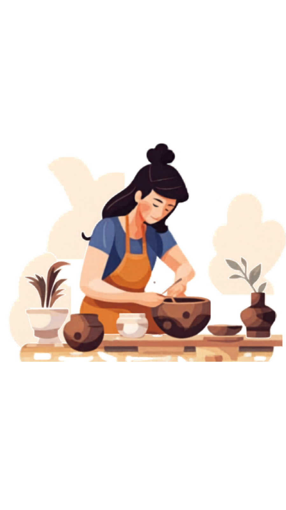

Bienvenidos a Della Mia Terra
Somos un espacio dedicado a la enseñanza y producción de piezas únicas. No importa si nunca tocaste la arcilla o si ya tenés experiencia; nuestro taller está diseñado para que te sientas como en casa mientas explorás tu creatividad.
Nuestros Cursos
Clases Sueltas
Elegí el día y la hora, tomate tu tiempo y hacelas cuantas veces quieras.
Clase Regular Adultos
El curso para los que quieren ir más allá. Materiales y horno aparte.
Clase Infantil
Clase dedicada para los más chicos. De 8 a 14 años.
Horarios del taller
| Día | Mañana | Tarde |
|---|---|---|
| Martes | 14:00 - 16:00 | 18:00 - 20:00 | |
| Miércoles | 14:00 - 16:00 | |
| Miércoles-Infantil | 17:30 - 18:30 | |
| Jueves | 9:00 - 11:00 | |
| Viernes | 18:30-20:30 | |
| Viernes-Infantil | 17:30 - 18:30 | |
| Sábado | 10:00 - 12:00 |
Della Mia Terra - Hecho con el alma en la mano
Te invitamos a desconectar del ruido y reconectar con tus sentidos. En nuestros talleres de cerámica, aprenderás las técnicas tradicionales para dar forma a tus propias ideas. No hace falta experiencia previa, solo ganas de ensuciarte las manos y descubrir la magia de crear desde cero.. Vení a conocer el proceso detrás de cada pieza
Preguntas Frecuentes y Conocimientos
Todo lo que necesitas saber sobre el mundo del barro.
¿Qué es la arcilla? 🌍
La arcilla es un material natural compuesto por partículas minerales muy pequeñas (silicatos de aluminio). En estado húmedo es plástica y moldeable, pero al secarse se vuelve rígida. Al ser sometida a altas temperaturas en el horno, ocurre una transformación química que la convierte en cerámica duradera.
¿Para qué sirve la cerámica? 🏺
Sirve para crear desde objetos utilitarios de uso diario (tazas, cuencos, platos) hasta piezas decorativas y escultóricas. Es un material que combina funcionalidad con expresión artística, ideal para personalizar tu hogar.
Tipos de procesos en el taller 🔄
- Construcción: Modelado manual mediante técnicas de pellizco, chorizo o placas.
- Identidad: Aplicación de texturas, sellos y engobes (color) sobre la pieza húmeda.
- Terminaciones: Lijado y limpieza una vez que la pieza está en "estado de cuero".
- Esmaltado: Aplicación de una capa vítrea para dar brillo e impermeabilizar la pieza tras la primera horneada.
Tipos de piezas que puedes crear ✨
En el taller puedes crear piezas utilitarias (aptas para alimentos), como boles y floreros, o piezas decorativas. El límite es tu imaginación y la técnica que apliques en el modelado.
Beneficios de hacer cerámica 🌿
Es una práctica terapéutica. Ayuda a reducir la ansiedad, mejora la motricidad fina, fomenta la paciencia (ya que hay que respetar los tiempos de secado de la tierra) y permite una desconexión total del mundo digital.
